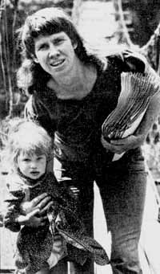

"The School of Country Living is in its annual period of bankruptcy," the lady explains, half smiling. For someone who's just lost two years of hard work and $100,000+ in a mudslide, this author/ mother/educator seems unusually buoyant. But then, that's CARLA EMERY for you.
The bankruptcy of which Carla speaks has a long history behind it. In fact, the story really goes back to the summer of 1970, when Ms. Emery first conceived of-and began to advertise-her now-legendary Old Fashioned Recipe Book.
The Recipe Book -a mammoth collection of information on how to grow, cook, preserve, and serve hundreds of foods and beverages-took three and a half years to write, and made publishing history soon after its appearance in March of 1974. (The Guinness Book of World Records lists Carla's five-pound manual as the largest mimeographed volume in general circulation, and also cites Carla for having sold more copies-45,000 to date-of a self-published guide than anyone in history.)
Two years ago, Carla and her husband, Michael, could easily have retired on the proceeds from their super-cookbook ... but they didn't. Instead, the couple used their earnings to open (in June 19751 the School of Country Living in Kendrick, Idaho . . . a place where people of all ages and backgrounds could come to learn farming, cooking, construction, and other skills.
From the beginning, the School operated at a loss. (It had to. State requirements effectively prohibited Carla from charging tuition.) Then, about a year ago, Bantam Books paid Carla $115,000 for publishing rights to her Recipe Book. . . and-for once-things were (financially speaking) looking up for the School.
All that has changed, however. For on August 2, 1976, the School of Country Living was hit by a giant mudslide . . . a disaster which left over a hundred animals dead and the School's buildings destroyed.
When asked if the School (which is now $0,000 in debt! would ever be revived, Carla told MOTHER: "It may never rise again. I can't predict that I can go on making the kind of money that's needed to keep the School open. All I can say, at this point, is that I've learned a pretty good lesson in reality."
(The new 7th Edition of Carla'sOld Fashioned Recipe Book-a 900-page treasury of recipes, tips, and country lore-is available for $15, plus $2.00 postage/handling, from Carla Emery, Kendrick Idaho 83537.-THE EDITORS.)
Permanent-pressed doggie burgers and canned horsemeat may not be on the way out yet .. . but they would be if FRANCES SHERIDAN GOULART-health food expert and wife of science fiction writer Ron Goulart-had anything to say about it.
The 85-pound Wilton, Connecticut cookbook author claims that dogs and cats-like their human guardians-regularly consume 10 to 12% more protein than their bodies can efficiently utilize ... to say nothing of the artificial food colorings and preservatives in pet chows. Which is why Ms. Goulart has written Bone Appetit:. Natural Fools for Pets ($2.50 from Pacific Search, 715 Harrison St., Seattle, Wash. 981091.
According to author/lecturer/distance-runner Goulart-whose previous book credits include Macmillan's . TheEcological Eclair and Chathams Bum Steers -there's already considerable nationwide interest in natural foods for pets. "When I gave a workshop on cooking for one's pet at a natural foods convention," she says, "I had a full house!"
Some "authorities" like to expound at length an environmental problems with out changing their own lifestyles at all . . . while other folks change their ways of living without writing or talking about the switch.
Somewhere between these two extremes is WES JACKSON, the soft-spoken geneticist-author of Man and the Environment (Win. C. Brown Co., 1971), who-last summer-abandoned his job as professor of environmental studies at the California State University :in Sacramento to start his own school on a 28-acre farm near Salina, Kansas.
Wes's "school" is called The Land Institute, and is-in his own words-devoted to "a search for alternatives: in agriculture, shelter, energy, and waste disposal".
Dr. Jackson-aided by his wife, Dana presently teaches a 15-week exploratory course in alternatives, for which eight students (who come from colleges all around the country! pay $462.50 in tuition. Students read papers and books, attend morning discussions, and work on individual projects. (Two girls are reconstructing a nearby Indian house, two more pupils are designing and building a solar water heater, and another is constructing a dwelling made of newspaper, wire, and poured concrete.)
Dr. Jackson says that he intends from time to time-to have outside lecturers come and speak to his students. He has already arranged for Dr. E.F. Schumacher-world-famous author of Small Is Beautiful and subject of the Plowboy Interview in MOTHER NO. 42-to visit the Institute in March.
"To put it simply," Dr. Jackson state, "our experiment-our 'course"-is an attempt to develop, and live by, a wholistic philosophy . . . one that enables us to live in harmony with nature. To this end, we're ready to try anything."
Anyone 18 years of age or older may apply for enrollment at The Land Institute. The dace to write: Wes Jackson, c/o The Land, Rt. 3, Salina, Kan. 67401.
Are you up on the latest doings of someone(such as any of the innovative pioneers featured in MOTHERS Plowboy Interview.) who's achieved recognition in a field regularly covered ht, this magazine.'' If so, send us a tightly written 200-word report on that person (aping with a snappy black-and white photograph), and-providing your report is used in NEWSWORTHIES-we'll gladly send you a flat .9.511($2.5 without the photo). Send contributions to NEWSWORTHIES Editor, THE Mother Earth News'', P.O. Box 70, Hendersonville, N.C. 28739.
|
 |
|
|